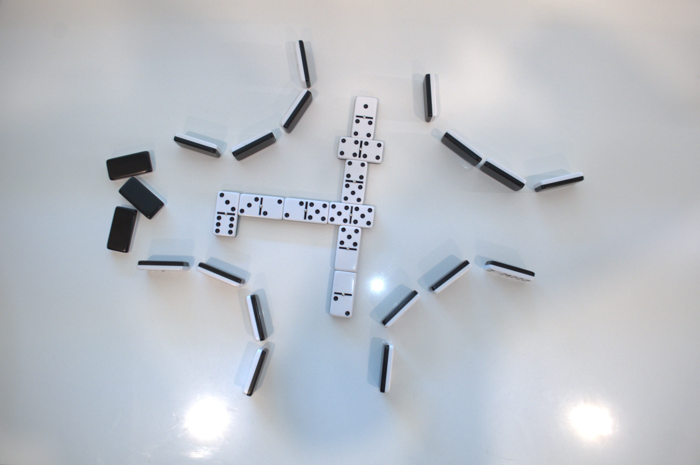
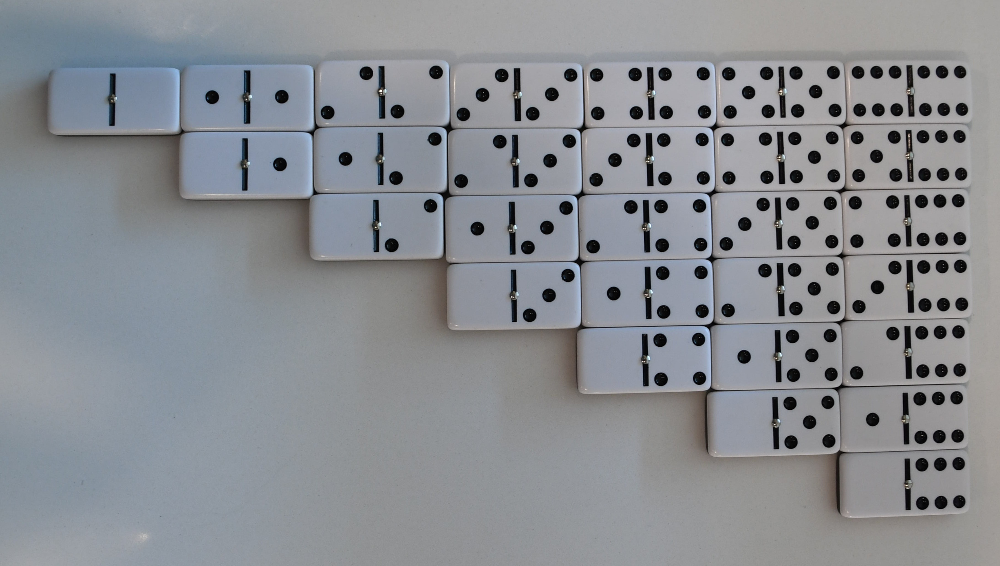
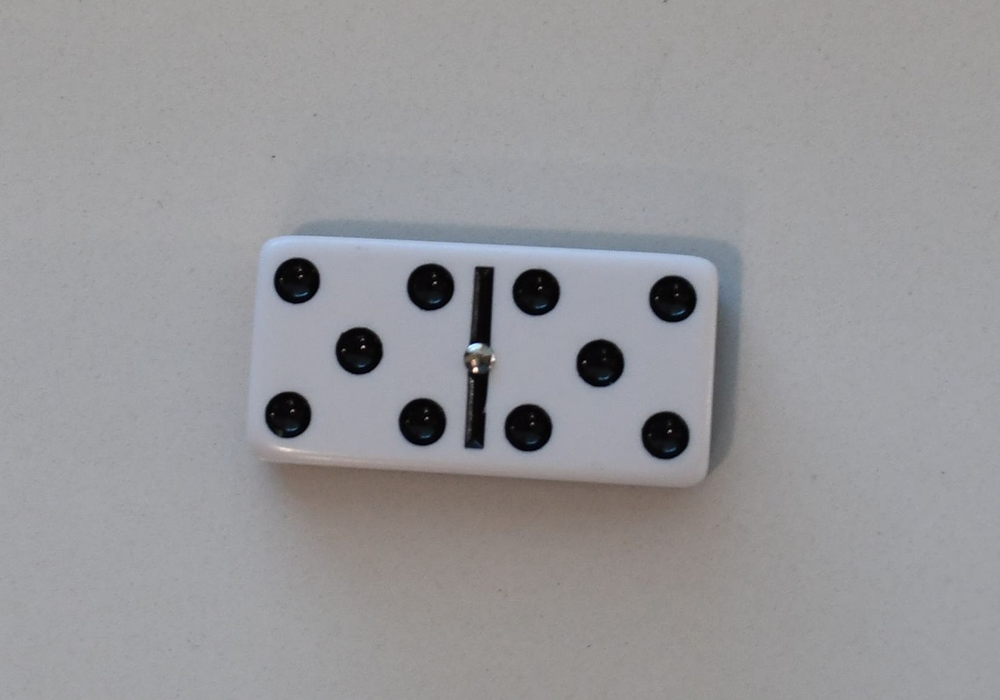
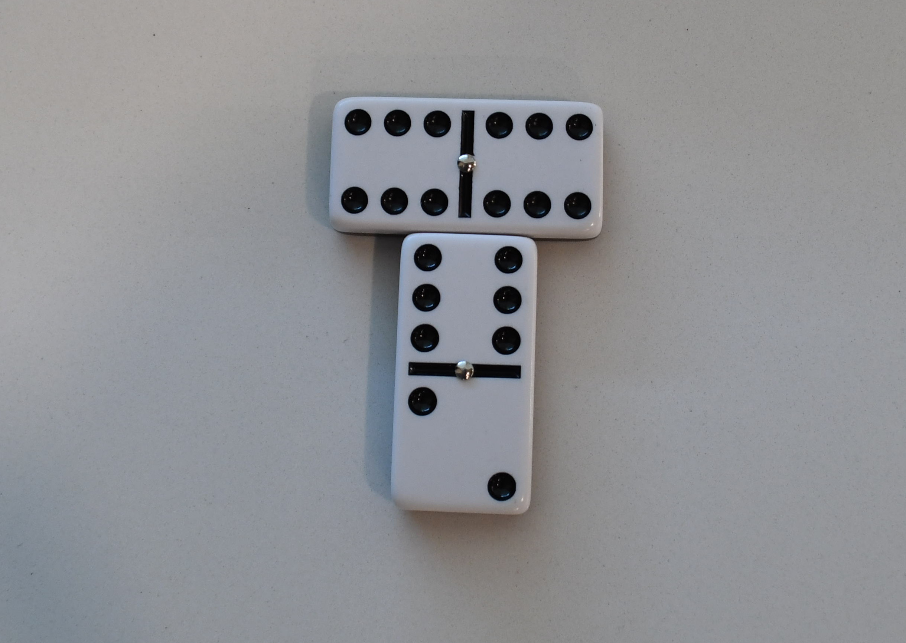

Muggins
The classic multiple of 5 Domino game
Written by Ash
Last Updated 12-29-2025
Prerequisites
-

A standard 0-6 Domino set. You should have 28 Dominos

2-4 Players
Pencil & Paper (for keeping track of score if you want to)
Objective
Be the first to run out of Dominos
Set-up
-
Shuffle all the dominos face-down. Have every player draw 7 dominos (5 if there are 4 players) and keep their hands hidden.

The remaining bones go into the draw pile, also known as the 'Bone Yard'.
Have the person with the highest double domino (6:6, 5:5, 4:4, etc...) play it to start the game.
Play continues clock-wise.

Play
If the current player can play a domino, they must.
-
They do this by placing a domino in their hand next to end (or any side of the starting domino) of any domino where the ends have the same number.
If the domino is a double, you must play it perpenicular to the other domino.
The 4:4 is placed side-ways and counted as 8 points instead of 4 points. The 3:6 at the far left is an example of how you can bend the dominos path if your running out of room on the table.
If the current score is a multiple of 5 (5, 10, 15, 20, etc...) then the current player adds that many points to their score.
Play then continues to the next clock-wise player.
If the current player couldn't play a domino, they draw one domino from the bone-yard at random and play continues to the next player clock-wise.
How do I count the score?
-
The starting domino when it is first placed, or it only has one domino touching it and it's placed on the long side.
This would have a score of 10 and the player who started with this play would score 10 points.
This would have a score of 14, 2 from the 6:2 and 12 from the 6:6.
Any exposed domino end.
Exceptions:
-
The center/starting domino's 'short edges'

This would have a score of 5. You don't count the 'short edge' of the starting domino, so the only points come from the ends of the other two dominos.

This would also have a score of 5 for the same reason as above.